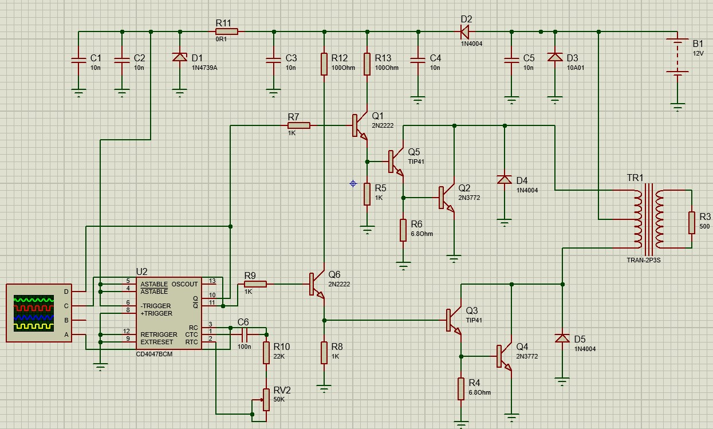

DESCRIPCIÓN
Explicación del circuito:

El funcionamiento básico del circuito se describe a continuación:
El circuito integrado 4047 es un multivibrador, que en este caso funciona como astable. Genera una señal cuadrada de 100Hz. La ecuación para el cálculo de la frecuencia es TA = 2,2 x R x C. donde C es un capacitor de 100nF y R es una resistencia de 22KOhm en serie con una resistencia variable de 50KOhm.
La salida Q y Q negado son complementarias y controla una cascada de transistores desde baja potencia hasta la potencia necesaria para excitar el transformador.
El transformador es un elevador de tensión de doble bobinado primario y secundario simple. La relación de transformación es N = 220V/9V = 24,44. El circuito se alimenta desde baterías de 12Volt. Para filtrar y estabilizar se utiliza un regulador de tensión con diodo Zener.
El diodo de 5A colocado en paralelo con la línea de alimentación genera un cortocircuito cuando la polaridad es invertida, haciendo que el fusible se actúe.
Los transistores de salida deben ser colocados sobre disipador de calor. Los cables de la conexión de la batería son de diámetro considerable.
Simulación
Se realiza la simulación del circuito original para comprobar el funcionamiento.
Señales en el circuito integrado 4047:
Señal a la salida. En el secundario del transformador: